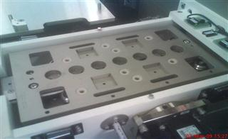

Service History
Subject: TR-60 "Detection Sensor Error" at the output shuttle
Handler Model: TR-60 (S/N: 121274)
Controller: RC520
Date: 2 Mar 2009
Symptom
Received the modified output shuttle plate and tried in Xilinx. However we still encounter the same "Detection Sensor Error" at the output shuttle as last week. The timing sensor at the output shuttle unable to read the condition of the shuttle plate properly.
I can remember correctly in NECSEM and Amkor, the coating for the output shuttle plate is black in color.

4 Mar 2009 Outstanding items:
1. Reworked input/output shuttles' pockets surface NG as devices easily piggyback on pockets' chamfer causing device floating. K.A committed to fabricate new shuttles.
2. Chamber docking cover required to seal up chamber during offline operation in hot/ cold mode. K.A committed to provide.
Action
K.A already bring back Output Shuttle for black hard anodized coating.
Cause
Shining surface of Output Shuttle caused improper sensor timing detection.